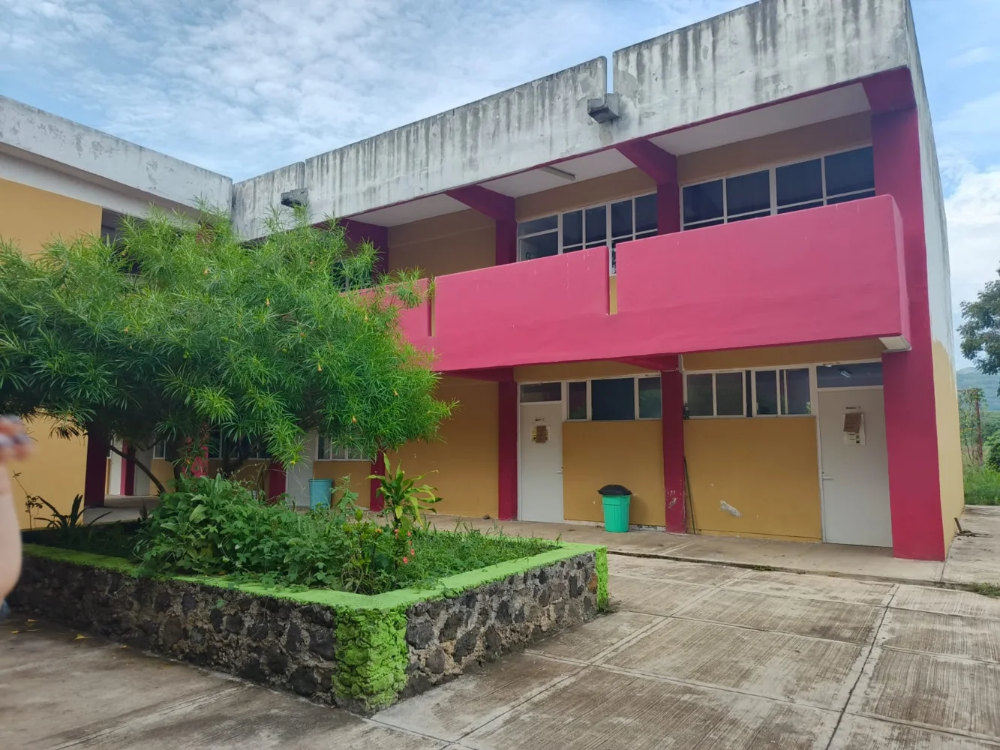

Biblioteca
Área de consulta académica y punto incluido en el modelo 3D.
Selecciona puntos del modelo para consultar edificios, fotografías y ubicaciones de referencia. El recorrido se carga bajo demanda para ahorrar datos.
El modelo 3D necesita conexión para cargar Three.js y puede consumir aproximadamente 56 MB. En dispositivos limitados utiliza la galería de fotografías de abajo.
Área de consulta académica y punto incluido en el modelo 3D.

Fotografía proporcionada con el proyecto MiEscuela3D.

Vista de un espacio de trabajo tecnológico del instituto.
Aprende, participa y contribuye al diagnóstico ambiental del ITSSAT.